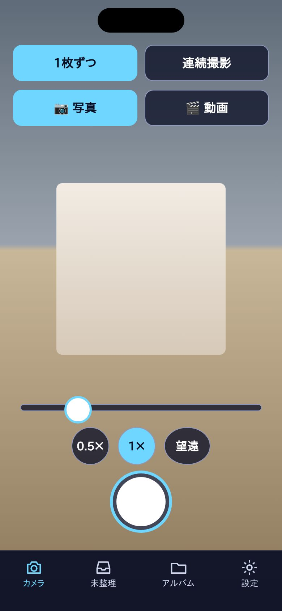
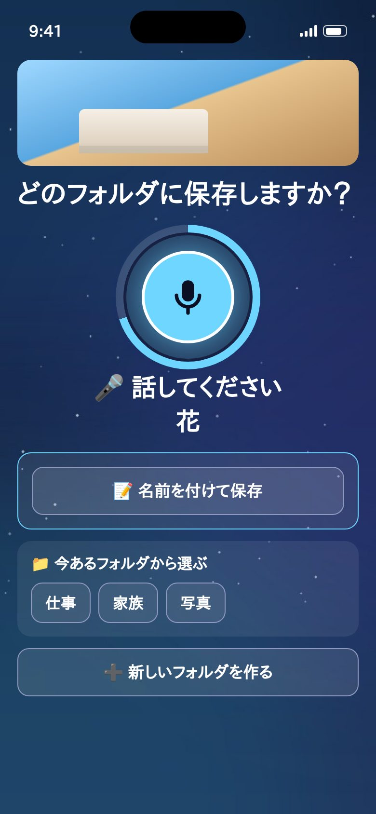
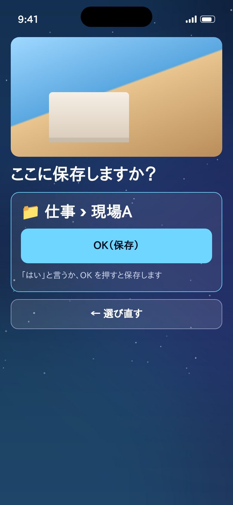
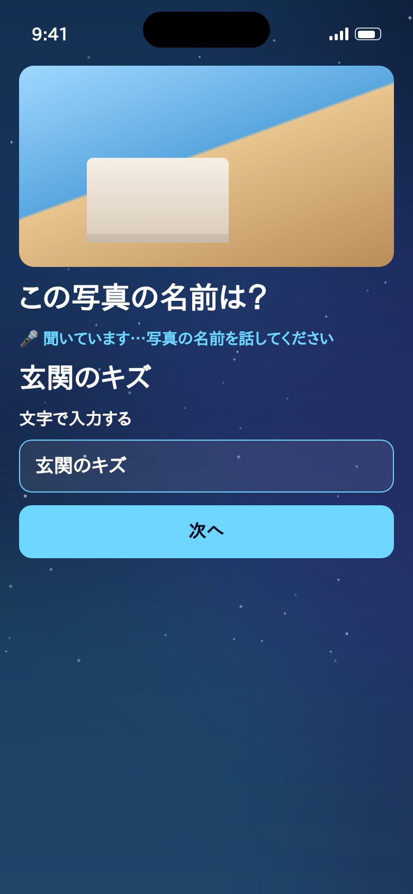
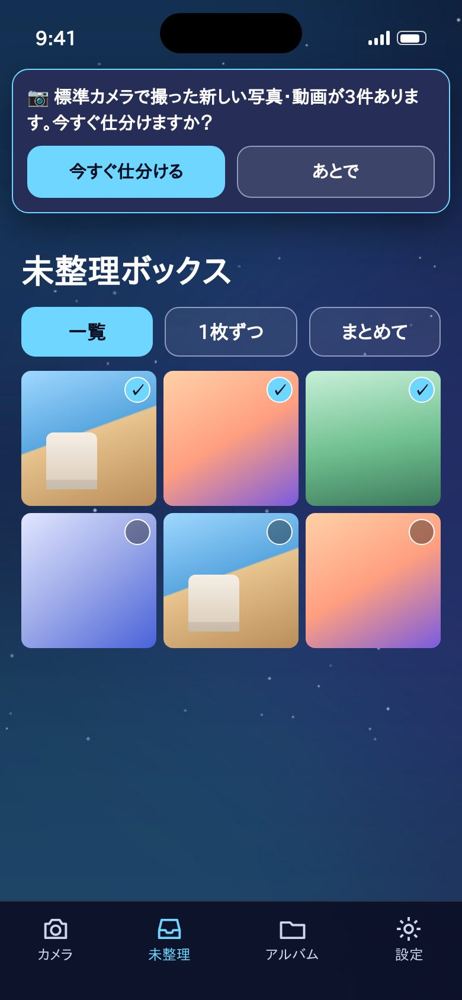
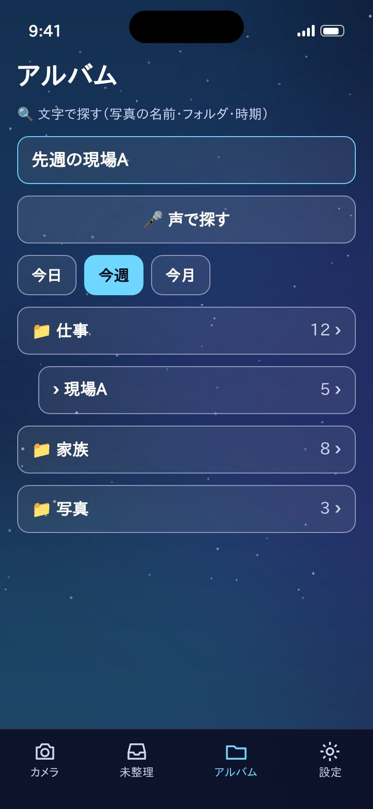
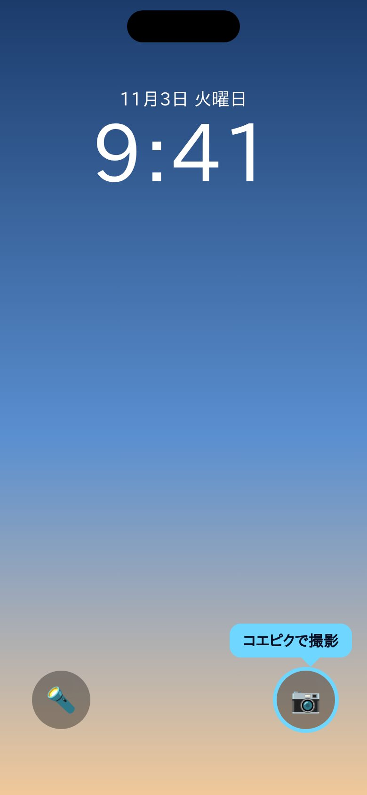

使い方ガイド
コエピクの使い方
撮って、話して、保存。声とボタンで、写真がフォルダに分かれます。
1
撮る
コエピクのカメラで撮ります

2
保存先を話す
「仕事の現場A」のように話します

3
「はい」で保存
確認してから保存されます

もくじ
🚀 はじめに：3つの手順📷 カメラで撮る🎤 声で保存先を伝える📝 名前を付けて保存（フォルダを使わない方法）📥 未整理ボックス（標準カメラで撮った写真）🔍 アルバムで探す📁 フォルダの中🔒 ロック画面などから、すぐコエピクのカメラを開く⚙️ 設定💾 バックアップ⭐ KoePic Pro💡 困ったとき
🚀はじめに：3つの手順
コエピクは、写真を「撮る → 保存先を話す → 『はい』で保存」の3つの手順で整理するアプリです。声が出せない場所では、ボタンや文字入力でも同じことができます。
- ① 撮る：コエピクのカメラで撮ります（iPhone の標準カメラで撮った写真は「未整理」から分けられます）
- ② 保存先を話す：「仕事の現場A」のように、フォルダの名前を話します
- ③ 「はい」で保存：「ここに保存しますか？」に「はい」と答えるか、「OK（保存）」を押します
📷カメラで撮る
- 「1枚ずつ」は、1枚撮るたびに保存先を聞きます。「連続撮影」は、何枚か撮ってから「仕分けへ進む」でまとめて保存します。
- 「写真」「動画」を切り替えられます。動画は撮影ボタンをもう一度押すと止まります。
- ズーム：2本の指でつまむ・広げるか、スライドバーを動かします。iPhone では「0.5×」「1×」「望遠」のボタンでレンズを切り替えられます。
- 撮ったまま保存しないでアプリを閉じても、次に開いたときに「前回保存していない写真・動画」として残っています。
🎤声で保存先を伝える
- 撮影すると「どのフォルダに保存しますか？」と聞かれ、自動で声を聞き始めます。
- 「仕事」のように1つの名前でも、「仕事の現場A」のように2段（フォルダの中のフォルダ）でも話せます。
- まだないフォルダの名前を話すと、新しく作ります。似た名前のフォルダがあるときは「既存の○○に入れますか？」と聞きます。
- 「ここに保存しますか？」で「はい」「OK」と言うか、「OK（保存）」を押すと保存されます。勝手には保存されません。
- 3秒ほど声が聞こえないと、声を止めて、フォルダのボタンと「新しいフォルダを作る」を目立たせます。ボタンや文字でも選べます。
- 初めて使うときは、マイクと音声認識の許可が必要です（iPhone の「設定」→「コエピク」で変えられます）。
📝名前を付けて保存（フォルダを使わない方法）
- 「どのフォルダに保存しますか？」で「📝 名前を付けて保存」を押すと、「この写真の名前は？」と聞かれます。
- 「玄関のキズ」のように、声か文字で名前を付けます。写真は「写真」フォルダにまとめて保存されます。
- あとで、名前の一部（例：「キズ」）で探せます。保存した写真を開いて「✏️ 名前を変える」で、名前を変えたり消したりできます。

📥未整理ボックス（標準カメラで撮った写真）
- iPhone・Android の標準カメラで撮った写真や、もとからある写真のうち、まだ分けていないものが並びます。
- 「一覧」では、タイルを押して何枚か選び、「選んだ○件を仕分ける」でまとめて分けます。「1枚ずつ」「まとめて」（近い時間に撮ったものをまとめる）でも分けられます。
- 「あとで」は今は分けずに次へ、「仕分けしない」は今後この一覧に出さない、です。
- 標準カメラで撮ったあとコエピクを開くと、「新しい写真・動画が○件あります。今すぐ仕分けますか？」とお知らせします。
- 写真へのアクセスを「選択した写真のみ」にしている場合は、選んだ写真だけが出ます。「写真を追加で選ぶ」から増やせます。

🔍アルバムで探す
- 「文字で探す」の欄に言葉を入れるか、「🎤 声で探す」で話して探します。写真の名前・フォルダ名・時期（「先週」「今月」など）・写真か動画か、を組み合わせられます（例：「先週の旅行の動画」）。
- 「今日」「今週」「写真」「動画」のボタンでも絞り込めます。
- 何も入れないときは、フォルダの一覧が出ます。フォルダを押すと中の写真が見られます。

📁フォルダの中
- 「タイル」と「カレンダー」で見方を切り替えられます。カレンダーで日付を押すと、その日の写真だけになります。
- 写真を押すと大きく表示されます（前へ・次へ・共有・名前を付ける）。
- 「☑ 選ぶ」で写真を選ぶと、移動・削除・共有（1件）・ZIP・PDF（KoePic Pro）ができます。
- 「🗑 このフォルダを削除」で、フォルダを消せます。「フォルダだけ削除」なら写真は残り、未整理に戻ります。
🔒ロック画面などから、すぐコエピクのカメラを開く
標準カメラの代わりに、コエピクのカメラをすぐ開けるボタンを置けます（iPhone は iOS 18 以降）。
- ロック画面：ロック画面を長押し（顔認証で鍵を開けた状態で）→「カスタマイズ」→「ロック画面」→ 下の左右のボタンの「−」→「＋」→「コエピクで撮影」→「完了」。設定アプリの「壁紙」→「カスタマイズ」からも変えられます。
- コントロールセンター：画面の右上から下にスワイプ → 何もない所を長押し →「コントロールを追加」→「コエピク」で検索
- アクションボタン（iPhone 15 Pro 以降）：「設定」→「アクションボタン」→「コントロール」→「コエピクで撮影」
- Android：画面の上から下にスワイプして出る「クイック設定」に「コエピクで撮影」のタイルを追加できます。アイコンを長押しすると「すぐ撮影」も出ます。

⚙️設定
- 文字とボタンの大きさ（大・中・小）、デザインの色、画面の自動回転、すりガラス効果を変えられます。
- 保存先：「写真」アプリのアルバムに保存する（おすすめ）か、コエピクの中だけに保存するかを選べます。
💾バックアップ
- 「バックアップを書き出す」で、フォルダと仕分けの記録を1つのファイルにします。共有画面の「ファイルに保存」から iCloud Drive などに保存してください。
- 「バックアップから戻す」で、そのファイルを選ぶと元に戻せます（今の記録は置き換わります）。
- KoePic Pro では、1日1回、自動でスマホの中にバックアップします。
⭐KoePic Pro
フォルダを無制限に作れる（無料は5個まで）、ZIP・PDF の書き出し、自動バックアップ、広告なし。月額・年額・買い切りから選べます。機種変更のときは「購入を復元する」を押してください。
↑ 上へ戻る💡困ったとき
- 声が聞き取れない：「もう一度話す」を押してすぐに話してください。マイクと音声認識が許可されているかも確かめてください。
- 標準カメラの写真が未整理に出ない：「設定」→「コエピク」→「写真」が「フルアクセス」になっているか確かめてください。
- ほしい機能・困ったこと：アプリの「設定」→「💬 ご意見・ご要望を送る」、または koepic.support@gmail.com へお送りください。